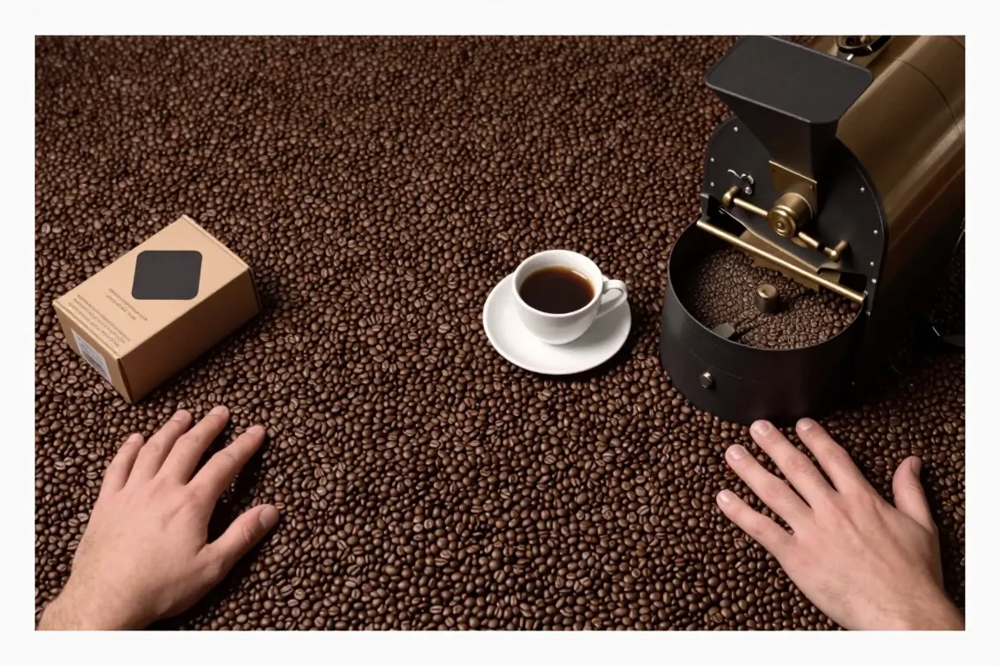

nett · 2006–now · også: Unboxing, Produktavsløring, Første titt
Et fast bilde rett ovenfra av et bord. To hender åpner en eske og løfter ut et produkt, og en stemme navngir hver del. Uttrykket er enkelt med vilje, slik at gjenstanden er stjernen.

Kjerneidé
Seeren eier den første berøringen ved fullmakt: vis åpningen av esken i sanntid og la gjenstanden, ikke rammen, bære interessen.
Designprinsipper
Fest kameraet over bordet i 90° og ramm inn esken på 40 % til 60 % av bildehøyden.
Bruk en enkel bunn i lys grå eller hvit (#F2EFE9) uten mønster og uten rekvisitter.
Vis bare to hender, uten ansikt, til produktet er ute av esken.
Hold hvert kutt på 4s til 12s; hold en nærbilde av produktet i minst 3s.
Navngi hver del med en etikett i nedre tredjedel på 24px til 32px i 2s i det øyeblikket delen dukker opp.
Vis prisen eller modellnavnet i én brikke øverst til høyre gjennom hele klippet.
Lys opp bordet forfra på 5600K slik at skyggene forblir myke og fargene forblir riktige.